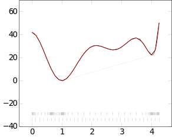
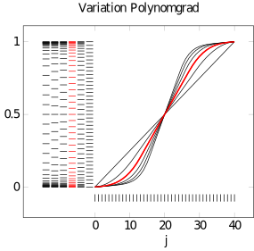
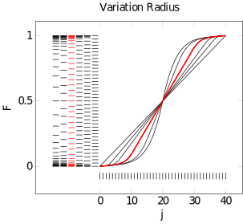

One-Dimensional Convexification
This packages's focus is the (semi-)convexification of a generalized energy density $W(\boldsymbol{F})$ that depends on the gradient of the solution $\nabla \boldsymbol{u}$.
First, a strategy needs to be instantiated, which only holds the parameters of the convexification, such as discretization interval, size of the discretization etc. This strategy needs to be of subtype <: AbstractConvexification and dispatches build_buffer. The latter mentioned will return a buffer that is needed together with the convexification strategy to call convexify.
NumericalRelaxation.convexify — Functionconvexify(graham::GrahamScan{T2}, buffer::ConvexificationBuffer1D{T1,T2}, W::FUN, F, xargs::Vararg{Any,XN}) where {T1,T2,FUN,XN} -> W_convex::Float64, F⁻::Tensor{2,1}, F⁺::Tensor{2,1}Function that implements the convexification on equidistant grid without deletion in $\mathcal{O}(N)$.
convexify(adaptivegraham::AdaptiveGrahamScan{T2}, buffer::AdaptiveConvexificationBuffer1D{T1,T2}, W::FUN, F::T1, xargs::Vararg{Any,XN}) where {T1,T2,FUN,XN} -> W_convex::Float64, F⁻::Tensor{2,1}, F⁺::Tensor{2,1}Function that implements the adaptive Graham's scan convexification without deletion in $\mathcal{O}(N)$.
Signed singular value polyconvexification using the linear programming approach. Compute approximation to the singular value polycovex envelope of the function Φ which is the reformulation of the isotropic function W in terms of signed singular values $Φ(ν) = W(diagm(ν))$, at the point ν via the linear programming approach as discussed in [1] Timo Neumeier, Malte A. Peter, Daniel Peterseim, David Wiedemann. Computational polyconvexification of isotropic functions, arXiv 2307.15676, 2023. The parameters nref and r (stored in poly_convexification struct) discribe the grid by radius r (in the ∞ norm) and nref uniform mesh refinements. The points of the lifted grid which are involved in the minimization are marked by the Φactive buffer, and deliver Φ values smaller than infinity.
Φ::FUN function in terms of signed singular values Φ(ν) = W(diagm(ν)) ν::Vector{Float64} point of evaluation for the polyconvex hull returnDerivs::Bool return first order derivative information
Signed singular value polyconvexification using the linear programming approach
takes dxd matrix F and function W$: \mathbb{R}^{d \times d} \to \mathbb{R}$ (isotropic)
Equidistant Convexificationstrategy
NumericalRelaxation.GrahamScan — TypeGrahamScan{T<:Number} <: AbstractConvexificationDatastructure that implements in convexify dispatch the discrete one-dimensional convexification of a line without deletion of memory. This results in a complexity of $\mathcal{O}(N)$.
Kwargs
δ::T = 0.01start::T = 0.9stop::T = 20.0
NumericalRelaxation.ConvexificationBuffer1D — TypeConvexificationBuffer1D{T1,T2} <: ConvexificationBufferConstructor
build_bufferis the unified constructor for allConvexificationBuffer
Fields
grid::T1holds the deformation gradient gridvalues::T2holds the incremental stress potential values W(F)
Adaptive Convexification
NumericalRelaxation.AdaptiveGrahamScan — Type AdaptiveGrahamScan <: AbstractConvexificationstruct that stores all relevant information for adaptive convexification.
Fields
interval::Vector{Float64}basegrid_numpoints::Int64adaptivegrid_numpoints::Int64exponent::Int64distribution::StringstepSizeIgnoreHessian::Float64minPointsPerInterval::Int64radius::Float64minStepSize::Float64forceAdaptivity::Bool
Constructor
AdaptiveGrahamScan(interval; basegrid_numpoints=50, adaptivegrid_numpoints=115, exponent=5, distribution="fix", stepSizeIgnoreHessian=0.05, minPointsPerInterval=15, radius=3, minStepSize=0.03, forceAdaptivity=false)NumericalRelaxation.AdaptiveConvexificationBuffer1D — TypeAdaptiveConvexificationBuffer1D{T1,T2,T3} <: ConvexificationBufferConstructor
build_bufferis the unified constructor for allConvexificationBuffer
Fields
basebuffer::ConvexificationBuffer{T1,T2}holds the coarse grid buffersadaptivebuffer::ConvexificationBuffer{T1,T2}holds the adapted grid buffersbasegrid_∂²W::T3second derivative information on coarse grid
To reduce the absolute computational cost of the convexification algorithm it is essential to represent the incremental stress potential $W(\boldsymbol{F})$ on as less grid points as possible. For accuracy reasons of the resulting convex hull, the resolution of the grid must be fairly high around the supporting points $F^-$ and $F^+$ of non-convex regions of $W$. In adaptive convexification we first identify a set of points of interest based on a coarse grid to construct an adaptive grid in a second step. The adaptive grid then has a high resolution around the previously identified points and a coarse resolution everywhere inbetween. An example of the coarse and the adaptive grid can be seen in the figure below.

How to use it
Simply use an instance of AdaptiveGrahamScan and build a buffer with buildbuffer. The convexify function will then dispatch on the assigned strategy.
adaptiveconvexification = AdaptiveGrahamScan(interval=[0.001, 20.001])
buffer = build_buffer(adaptiveconvexification)
W, F⁺, F⁻ = convexify(adaptiveconvexification,buffer,W,Tensor{2,1}((2.0,)))interval::Vector{Float64}
Specifies here the discretization interval for the convexification grid. In some cases default settings for adaptive convexification will not fit for the problem at hand. In this case the default values for the keyword arguments
basegrid_numpoints::Int64 = 50adaptivegrid_numpoints::Int64 = 1150exponent::Int64 = 5distribution::String = "fix"stepSizeIgnoreHessian::Float64 = 0.05minPointsPerInterval::Int64 = 15radius::Float64 = 3minStepSize::Float64 = 0.03forceAdaptivity::Bool = false
of struct AdaptiveGrahamScan must be altered.
In general, select an interval such that it covers all non-convex parts of $W(\boldsymbol{F})$. basegrid_numpoints and convexgrid_numpoints must be chosen large enough to represent all relevant information of $W(\boldsymbol{F})$ but small enough to keep computational cost low.
To understand how to set the parameters minStepSize, radius and exponent, that mainly characterize the distribution of the grid points on a given subinterval $[F^-,F+]$ (subinterval between two previously identified points of interest) of the main interval, correctly, we need to understand how the distribution of the grid points works mathematically.
For each of the two distribution types there exists a function that maps a vector entry $j$ to to a point on the given subinterval. This function is a piecewisely defined polynomial of degree $p$. $a$, $b$, $c$, $d$, $j^{-}_{r}$ and $j^{+}_{r}$ are parameters that are automatically fitted for a specific problem. $j_{max}$ is the number of gridpoints to be distributed on a given subintervall.
\[\begin{align*} {var}: \mathbb{R} & \longrightarrow \mathbb{R} \\ j & \longmapsto \left\{\begin{array}{ll} F^- + a \, j^p + b \, j , & \text{if } j < \frac{j_{\max}}{2}, \\ F^+ - \left(a \,(j_{\max} - j)^p + b \,(j_{\max} - j) \right) , & \text{if } j \geq \frac{j_{\max}}{2}. \end{array} \right. \end{align*}\]
\[\begin{align*} {fix}: \mathbb{R} & \longrightarrow \mathbb{R} \\ j & \longmapsto \left\{\begin{array}{ll} F^- + a \, j^p + b \, j , & \text{if } j < j^{-}_{r}, \\ c \, j + d, & \text{if } j^{-}_{r} \leq j \leq j^{+}_{r}, \\ F^+ - \left(a \,(j_{\max} - j)^p + b \,(j_{\max} - j) \right) , & \text{if } j > j^{+}_{r}. \end{array} \right. \end{align*}\]
For distribution type "var" the function constists of two regions. A polynomial of degree $p$ on the first half of the interval $[0, j_{\max}]$ and a mirrored version of it on the second half of it. Distribution type "fix" is an extension of type "var" that adds a linear part to the middle of the interval. See figures below for examples polynomials of type "fix".
Unless the lengths of all subintervals are almost equal, one should not use distribution type "var", since it has the drawback that it results in an adaptive grid where the step size between two grid points depends heavily on the length ($F^+-F^-$) of the subinterval. This way the resulting grid can have a drastically different resolution on either side of a point of interest.
Always set the parameters of your grid in the following order:
minStepSize
Defines the slope of the polinomial at its start/end point. For $j_{max} \rightarrow \infty$ the step size of the interval at its start/end point will converge to this value. Should be the highest value that still just serves the accuracy requirements. Try 0.0015*length_of_interval as a starting value.
radius(only for type "fix")
Sets the radius $\Delta F$ around a point of interest in which the step size increases to the maximum value. In terms of the mathematical definition of $fix$ this value is used to set the parameters $j^{-}_{r}$ and $j^{+}_{r}$, which are the vector indices that define the transitions between linear and non-linear parts. See the figure above for the influence of this parameter on the resulting polynomial. Also check the figure at the beginning of this section to see the resulting adaptive grid. You will notice that the step size of the grid increases equally and within a constant radius around all points of interest.
exponent
Sets the exponential "p" of the polynomial. It mainly influences the difference between highest and lowest step size. Or in other words, for increasing polynomial degrees the grid points will be pushed further towards the start and end points of the interval. See figure above for the influence of this parameter on the resulting polynomial.
convexgrid_numpoints
The number of grid points of the adaptive grid must now be chosen intuitively. As a starting value choose 20 points per subinterval.
 
Extended Info
NumericalRelaxation.adaptive_1Dgrid! — Function function adaptive_1Dgrid!(ac::AdaptiveGrahamScan, ac_buffer::AdaptiveConvexificationBuffer1D{T1,T2,T3}) where {T1,T2,T3}
...
return F⁺⁻
endBased on any grid ac_buffer.basebuffer.grid and coresponding function values ac_buffer.basebuffer.values and its second derivative ac_buffer.basegrid_∂²W, a set of points of interest F⁺⁻ will be determined. Based on this set of points and different parameters stored in ac an adaptive grid will be constructed such that grid resolution is highest at these points.
The resultiong grid will be broadcasted into ac_buffer.adaptivebuffer.grid.
F⁺⁻ will be determined by checking the slope of mathematical function W(F). Start and end points of non-convex subintervals will be stored. Additionally all minima of ∂²W(F) serve as points of interest as well (only if step size at this point is greater than ac.stepSizeIgnoreHessian).
NumericalRelaxation.build_buffer — Functionbuild_buffer(convexstrategy::T) where T<:AbstractConvexificationMaps a given convexification strategy convexstrategy to an associated buffer.
NumericalRelaxation.convexify_nondeleting! — Functionconvexify_nondeleting!(F, W)Kernel function that implements the actual convexification without deletion in $\mathcal{O}(N)$.